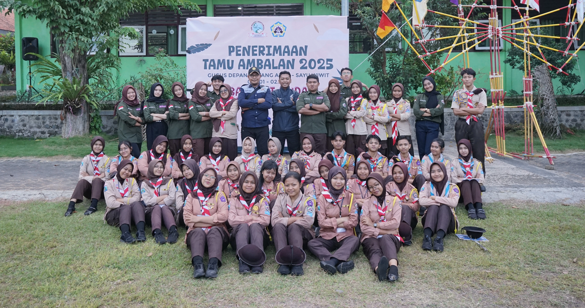

 Penerimaan Tamu Ambalan & Diesnatalis SMK Negeri 1 Banyuwangi merupakan kegiatan gabungan antara Penerimaan Tamu Ambalan dan perayaan hari jadi sekolah yang dilaksanakan pada 18 Juli 2025. Kegiatan ini bertujuan ... Rabu, 25 Juli 2025
Open Recruitment Anggota Dewan Ambalan adalah proses seleksi terbuka bagi Pramuka Penegak di SMKN 1 Banyuwangi yang ingin bergabung dalam kepengurusan Ambalan. Kegiatan ini bertujuan ... Rabu, 25 Juli 2025
Open Recruitment Anggota Dewan Ambalan adalah proses seleksi terbuka bagi Pramuka Penegak di SMKN 1 Banyuwangi yang ingin bergabung dalam kepengurusan Ambalan. Kegiatan ini bertujuan ... Rabu, 25 Juli 2025